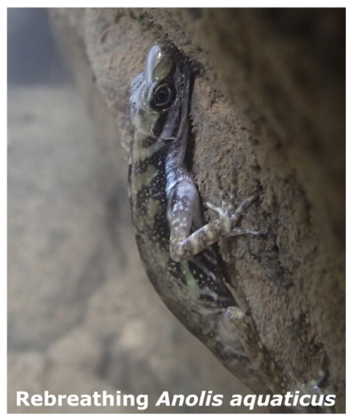
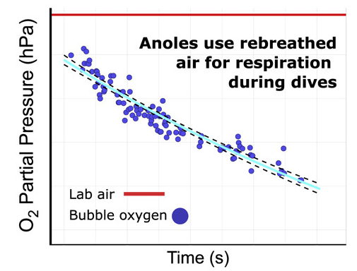
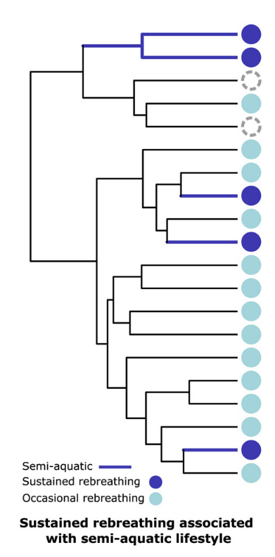

Hoja de trabajo 03: Métodos evolutivos (anolis como ejemplo)
Intro Bio I (B0160) - Modulo de Evolucion
1 Objetivo de la actividad
Al finalizar esta actividad, el grupo deberia ser capaz de interpretar evidencia en el contexto de las hipotesis, y decidir que hipotesis recibe mayor apoyo relativo.
2 Instrucciones generales
- Lean cada bloque de evidencia.
- Identifiquen el patron principal en cada caso.
- Evalen que tan bien cada evidencia apoya las dos hipotesis.
Usen respuestas breves pero justificadas con datos.
3 Hipotesis
- Hipotesis A: la capacidad de re-inspirar aire surgio una sola vez y luego se heredo en el linaje correspondiente.
- Hipotesis B: la capacidad de re-inspirar aire surgio varias veces de forma independiente en distintos linajes.
4 Contexto biologico
Algunas especies de Anolis pueden permanecer sumergidas y volver a inspirar aire debajo del agua desde una burbuja alrededor del hocico. Eso comportamiento da una ventaja para permanecer sumergidos por mas tiempo, y evitar depredadores. Pero no es claro si se trata de un comportamiento ancestral que se ha mantenido en unos linajes, o si se ha originado varias veces de forma independiente.
Su grupo es un equipo de investigadores que quiere resolver esta pregunta, y han recolectado tres tipos de evidencia: comportamiento, fisiologia, y distribucion filogenetica. Analicen cada bloque de evidencia y decidan que hipotesis recibe mas apoyo.

Detalles en el articulo original: https://www.sciencedirect.com/science/article/pii/S0960982221005753
5 Evidencia 1: observacion del comportamiento
Ensayo de comportamiento:
- Se realizaron pruebas de submersion en 32 especies de Anolis y 4 lagartijas no anolis.
- Las especies semi-acuaticas mostraron re-inspiracion, por lo menos una vez, con mayor frecuencia que las especies no acuaticas.
- Las especies semi-acuaticas tambien mostraron re-inspiracion sostenida en mas ensayos. La re-inspiracion sostenida se define como la capacidad de mantener la burbuja de aire para hacer varias respiraciones consecutivas.
5.1 Interpretacion del comportamiento
- Que te permite inferir esta observacion sobre la funcion y distribucion del comportamiento a lo largo de las especies?
- Con solo esta evidencia, cual hipotesis recibe mas apoyo: A, B, o aun no se puede decidir? Expliquen brevemente.
6 Evidencia 2: dinamica del oxigeno en la burbuja
Resultado fisiologico:
- El pO2 de la burbuja de re-inspiracion inicia parecido al aire ambiente y disminuye de forma monotona durante la prueba.

6.1 Interpretacion fisiologica
- Que sugiere este patron sobre la funcion respiratoria de la burbuja?
- Esta evidencia favorece mas a la hipotesis A, a la B, o no distingue bien entre ambas? Justifiquen.
7 Evidencia 3: distribucion filogenetica del comportamiento
Patron evolutivo:

7.1 Interpretacion evolutiva
- Que patron observan en la distribucion de las especies con re-inspiracion sostenida?
- Cual hipotesis recibe mas apoyo con esta evidencia, A o B? Expliquen por que.
- Esta evidencia sugiere un origen unico, varios origenes independientes, o aun falta informacion? Justifiquen.
8 Sintesis
Completen la tabla con un juicio breve para cada evidencia.
Escala: ++ (apoyo fuerte), + (apoyo moderado), 0 (neutral), - (debilita).
| Evidencia | Hipotesis A | Hipotesis B | Justificacion corta |
|---|---|---|---|
| Observacion del comportamiento | |||
| Disminucion del pO2 en la burbuja | |||
| Distribucion en el arbol filogenetico |
- Cual hipotesis recibe mayor apoyo global con la evidencia disponible?
- Escriban una conclusion breve (2-3 oraciones), incluyendo una nota de incertidumbre.